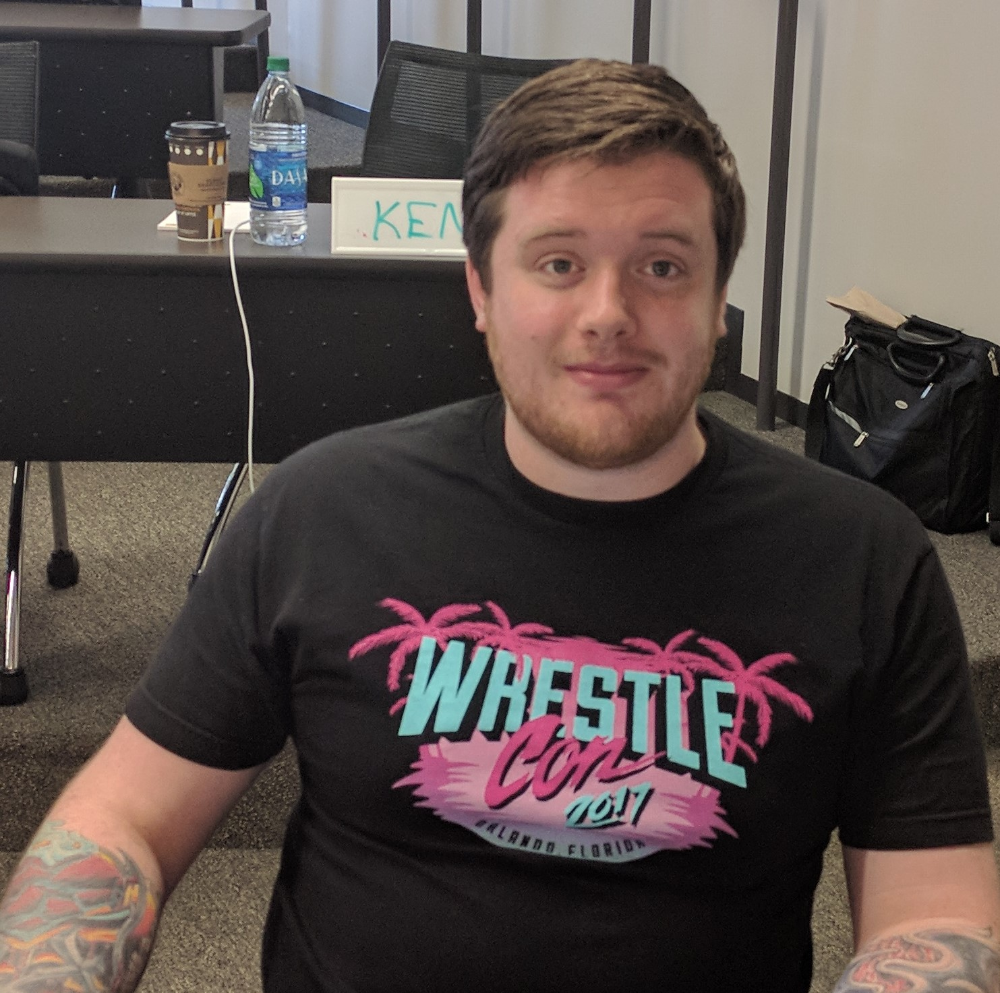

About Me
Hello, hello again. You might have forgot, the journey ends. You tied your knots, you made your friends. You left the scene without a trace. One hand on the ground, one hand in space. Oh, you passed on mercy, you tried the rest. You gave your body, you gave the best. Staring at the green door, living in the sky. You don't want to know it, you just want to fly. Hello, hello again. Hello, hello again. Hello. I know you're a dreamer, who's under the gun. I know you're a dreamer who's only just begun. Hello, hello again. Hello, hello again. Oh, and when there's nothing, nothing left to lose. You leave it all to fade to blue. You want to feel electric, you want to feel loose, you want to be eclectic, you want to call a truce. Look at the profile, staring at the flame, waiting for the sunshine, standing in the rain. Hello, hello again. Hello, hello again.
Can I touch you? Are you out of touch? I guess I never noticed that much. Geranium lover. I'm live on your wire. Oh, come and take me, whoever you are. She's a lot like you, the dangerous type. She's a lot like you. Come on and hold me tight. Oh, inside angel, always upset. Keeps on forgetting that we ever met. Can I bring you out in the light? My curiosity's got me tonight. She's a lot like you, the dangerous type. Oh she's a lot like you. Come on and hold me tight. Museum directors, with high shaking heads, they kick white shadows until they play dead. They want to crack your crossword smile. Oh, can I take you out for awhile, yeah. She's a lot like you, the dangerous type. She's a lot like you. Come on and hold me tight.
Connect with Me